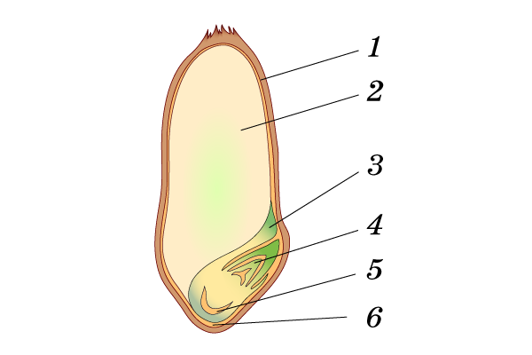
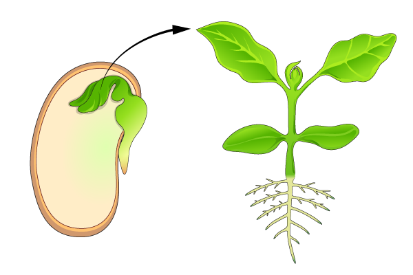
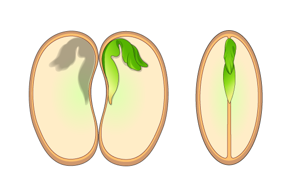

Задание 1 // Распредели по группам растения по строению семян
[ПРОТОКОЛ]: Перетащите структуры в технологические контейнеры.
лилия
редис
кукуруза
томаты
пшеница
свёкла
рожь
яблоня
Однодольные
Двудольные
Задание 2 // Распредели по группам растения по строению семян
морковь
ландыш
слива
овёс
ячмень
капуста
чеснок
подсолнечник
Однодольные
Двудольные
Задание 3 // Распредели по группам растения по локализации запаса веществ
сирень
ячмень
картофель
лук
рожь
фасоль
тигровая лилия
вишня
баклажан
горох
кукуруза
тюльпан
Запас питательных веществ только в эндосперме
Запас питательных веществ в семядолях
Задание 4 // Выбери верный ответ
1. Рассмотри таблицу масличности семян. Выбери верный ответ с тремя растениями, которые содержат больше всего жира в семенах:
Задание 5 // Выбери верный ответ
1. К каким органам растения относятся семена?
Задание 6 // Выбери верные ответы
1. Определи по характеристикам строения цветков и семян, к каким биологическим группам относится фасоль? (Несколько вариантов)
Задание 7 // Впиши верные биологические термины
[З...]
— зачаток будущего растения. Запас питательных веществ семени большинства видов находится в особой запасающей ткани —
[э...]
.
В
[з...]
различают
[к...]
,
[с...]
,
[п...]
и
[с...]
.
[С...]
— это первые листья зародыша растения.
Задание 8 // Зачеркни лишние слова
У фасоли , пшеницы , гороха , тюльпана , вишни и сливы , малины , овса и многих других растений зародыши семян имеют две семядоли. Эти растения называют двудольными.
Растения, имеющие в зародыше семени одну семядолю, называют однодольными. К ним относят горох ,капусту , пшеницу, лук, кукурузу и яблоню ,томаты ,огурец и картофель.
Задание 9 // Выбери верный ответ
1. У какого из перечисленных растений плод зерновка?
Задание 10 // Выбери верные ответы
1. Какие из перечисленных растений НЕ относятся к однодольным? (Несколько вариантов)
Задание 11 // Выбери верные ответы
1. Какие из перечисленных растений НЕ относятся к двудольным? (Несколько вариантов)
Задание 12 // Анализ графической схемы [sem.png]
1. Какой цифрой на рисунке обозначена семядоля в строении семени?

Задание 13 // Анализ графической схемы [sem.png]
1. Какое растение по строению семени представлено на рисунке?
Задание 14 // Анализ прорастания [seed_leaves.png]
1. Рассмотри рисунок. Какая часть семени является зародышевыми листьями растения?

Задание 15 // Анализ строения семян [seed_compare.png]
1. Какой рисунок (слева или справа) отображает строение семян персика?

Задание 16 // Классификация растений [seed_compare.png]
1. Рассмотри рисунок. Чем различаются двудольные и однодольные растения?
Задание 17 // Выбери верные биологические термины
— зачаток будущего растения. Запас питательных веществ семени большинства видов однодольных растений находится в особой запасающей ткани —
.
— это первые листья зародыша растения. У многих растений зародыши семян имеют две семядоли. Эти растения называют
. Растения, имеющие в зародыше семени одну семядолю, называют
.
Задание 18 // Анатомия органов зародыша [sem.png]
1. Какой цифрой обозначен орган растения в строении семени, с помощью которого растение закрепляется в почве?